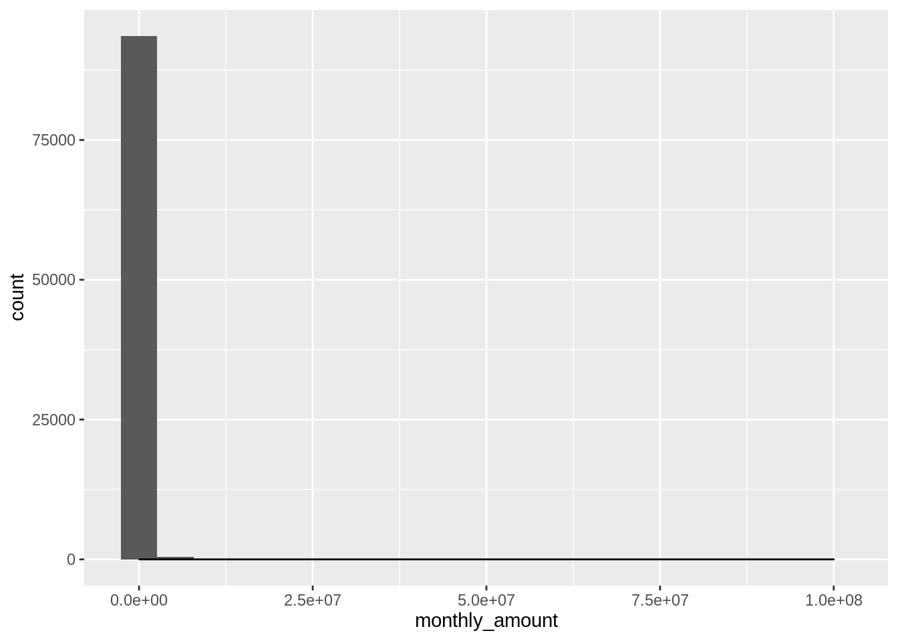
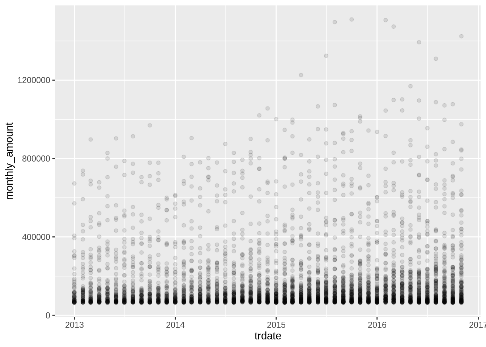

2 Understanding
2.1 Initial Import and Data Prep
# import dataset
#list of common NA substitution terms
# 0 is not included intentionally
pot_nas <- c("", " ", " ", ".", ",", "NaN", "NAN", "nan", "NA", "na", "N/A", "n/a")
# To make checking for missing values, including the read_csv(,na) argument allows us to assign all missing values defined in pot_nas as NA
transactions <- read_csv("./core_data/transactions.csv", na = pot_nas)## Parsed with column specification:
## cols(
## date = col_character(),
## customer_id = col_character(),
## industry = col_double(),
## location = col_double(),
## monthly_amount = col_double()
## )## [1] "date" "customer_id" "industry" "location"
## [5] "monthly_amount"# rename date to trdate due to potential issues with R date function
tname <- names(transactions)
tname[1] <- "trdate"
names(transactions) <- tname
#check for NA values
if (nrow(transactions) == nrow(na.omit(transactions))){
print("no missing values")
} else {
print("missing values present")
}## [1] "no missing values"## Classes 'spec_tbl_df', 'tbl_df', 'tbl' and 'data.frame': 94248 obs. of 5 variables:
## $ trdate : chr "1/1/13" "1/2/13" "1/3/13" "1/4/13" ...
## $ customer_id : chr "70efdf2ec9b086079795c442636b55fb" "70efdf2ec9b086079795c442636b55fb" "70efdf2ec9b086079795c442636b55fb" "70efdf2ec9b086079795c442636b55fb" ...
## $ industry : num 8 8 8 8 8 8 8 8 8 8 ...
## $ location : num 9 9 9 9 9 9 9 9 9 9 ...
## $ monthly_amount: num 753851 651548 1138769 659739 770675 ...
## - attr(*, "spec")=
## .. cols(
## .. date = col_character(),
## .. customer_id = col_character(),
## .. industry = col_double(),
## .. location = col_double(),
## .. monthly_amount = col_double()
## .. )# date variable not returned in date format
transactions$trdate <- as.Date(transactions$trdate, format = "%d/%m/%y")
# update industry, customer and location as they are all factors
transactions$customer_id <- as.factor(transactions$customer_id)
transactions$industry <- as.factor(transactions$industry)
transactions$location <- as.factor(transactions$location)
# double check formatting
str(transactions)## Classes 'spec_tbl_df', 'tbl_df', 'tbl' and 'data.frame': 94248 obs. of 5 variables:
## $ trdate : Date, format: "2013-01-01" "2013-02-01" ...
## $ customer_id : Factor w/ 4464 levels "000a91f3e374e6147d58ed1814247508",..: 1970 1970 1970 1970 1970 1970 1970 1970 1970 1970 ...
## $ industry : Factor w/ 10 levels "1","2","3","4",..: 8 8 8 8 8 8 8 8 8 8 ...
## $ location : Factor w/ 10 levels "1","2","3","4",..: 9 9 9 9 9 9 9 9 9 9 ...
## $ monthly_amount: num 753851 651548 1138769 659739 770675 ...
## - attr(*, "spec")=
## .. cols(
## .. date = col_character(),
## .. customer_id = col_character(),
## .. industry = col_double(),
## .. location = col_double(),
## .. monthly_amount = col_double()
## .. )## trdate customer_id industry
## Min. :2013-01-01 0023a1e3447fdb31836536cc903f1310: 47 1 :44901
## 1st Qu.:2014-05-01 006c64491cb8acf2092ce0e0341797fe: 47 2 :22043
## Median :2015-06-01 0079e3e6d496ad07cee7fd63d3d7c9b2: 47 3 : 8336
## Mean :2015-03-26 00989c20ff1386dc386d8124ebcba1a5: 47 4 : 5896
## 3rd Qu.:2016-03-01 00bbd6beace7365b27a913db75fddce9: 47 7 : 3912
## Max. :2016-11-01 01882513d5fa7c329e940dda99b12147: 47 5 : 3341
## (Other) :93966 (Other): 5819
## location monthly_amount
## 2 :21410 Min. : 0
## 1 :17660 1st Qu.: 95323
## 5 : 9703 Median : 179399
## 4 : 9351 Mean : 395397
## 6 : 7446 3rd Qu.: 375439
## 7 : 7317 Max. :100000000
## (Other):21361The summary shows; * Date range from Jan 2013 to Dec 2016 * 4464 unique customers * All 10 locations and industries are represtened * There is a disproportionate number of transactions in industires 1 & 2 * There is a disproportionate number of transactions in locations 1 & 2 * The monthly transaction amounts range from 0 - 100M ** The mean is 395396 and median is 179399, low considering the range
2.2 Data Quality
2.3 Initial Understanding
2.3.1 Customers
# Do all customer have equal numbers of transactions?
## counts transactions by customer_id, formats as a table
number_of_transactions_per_customer <- as.data.frame(table(transactions$customer_id))
summary(number_of_transactions_per_customer)## Var1 Freq
## 000a91f3e374e6147d58ed1814247508: 1 Min. : 1.00
## 0014fcb3db4c8459d26309b177005b10: 1 1st Qu.: 8.00
## 0023a1e3447fdb31836536cc903f1310: 1 Median :18.00
## 0023daa5a44ef6fbe42379f24e00254c: 1 Mean :21.11
## 0029f088c57ad3b6ec589f9ba4f7a057: 1 3rd Qu.:33.00
## 003af5a042e00ac9b489153a81d676ca: 1 Max. :47.00
## (Other) :4458# Answer - No
# Do any customers have duplicate transactions on the same date?
## creates a dataframe of the trdate and customer_id columns
duplicate_check <- transactions %>%
select(trdate, customer_id)
## appends a column to the dataframe if there is a duplicate transaction
duplicate_check$dup <- transactions %>%
select(trdate, customer_id) %>%
duplicated()
## creates a table of rows that are duplicates
dup_check_sum <- duplicate_check %>%
filter(duplicate_check$dup == "TRUE")
## if there are no entries, therefore no duplicates in the new table prints "no duplicates
if (nrow(dup_check_sum) == 0){
print ("No duplicates")
} else{
print("Yes duplicates")
}## [1] "No duplicates"# Answer - No
# Do any customers operate across industries?
## selects the columns customer_id and industry and then writes unique entries to dataframe
industry_check <- transactions %>%
select(industry, customer_id) %>%
distinct()
## selects only the customer id and checks for duplicates
industry_check$multi_industry <- industry_check %>%
select(customer_id) %>%
duplicated()
## if the customer id is duplicated, that means that it appeared in more than one industry
## same as duplicate check for dates
industry_checksum <- industry_check %>%
filter(multi_industry == "TRUE")
if (nrow(industry_checksum) == 0){
print ("No duplicate")
} else{
print("Yes duplicates")
}## [1] "No duplicate"# Answer - No
# Do any customers operate across locations?
## same process as industry but for location
location_check <- transactions %>%
select(location, customer_id) %>%
distinct()
location_check$multi_location <- location_check %>%
select(customer_id) %>%
duplicated()
location_checksum<- location_check %>%
filter(multi_location == "TRUE")
if (nrow(location_checksum) == 0){
print ("No")
} else{
print("Yes")
}## [1] "No"2.3.2 Industry
# Number of transactons per industry
## using only customer_id and industry, creates a bar plot, counting how many times each industry appeared
transactions %>%
select(customer_id, industry) %>%
ggplot(aes(x = industry)) + geom_bar()# Industries 1 & 2 have a much larger number of transactions, similarly industries 6 & 10 appear quite low
## create a summary of transactions per industry in a table
number_of_transactions_per_industry <- as.data.frame(table(transactions$industry))
## give the columns readable names
names(number_of_transactions_per_industry) <- c("industry", "count")
number_of_transactions_per_industry## industry count
## 1 1 44901
## 2 2 22043
## 3 3 8336
## 4 4 5896
## 5 5 3341
## 6 6 195
## 7 7 3912
## 8 8 2815
## 9 9 2090
## 10 10 719# calculates mean of transactions per industry
ntpi_mean <- mean(number_of_transactions_per_industry$count)
## calculates standard deviation of transactions per industry
ntpi_sd <- sd(number_of_transactions_per_industry$count)
## calculates standard deviations from mean for each count
number_of_transactions_per_industry$SDs <- (number_of_transactions_per_industry$count - ntpi_mean)/ntpi_sd
number_of_transactions_per_industry## industry count SDs
## 1 1 44901 2.53884748
## 2 2 22043 0.90301908
## 3 3 8336 -0.07791976
## 4 4 5896 -0.25253790
## 5 5 3341 -0.43538599
## 6 6 195 -0.66052888
## 7 7 3912 -0.39452248
## 8 8 2815 -0.47302908
## 9 9 2090 -0.52491356
## 10 10 719 -0.62302892# industry 1 is 2.5 standard deviations from the mean however industry 2 is within 1 standard deviation
# number of customer per industry
## creates a bar plot, counting how many times each industry appeared
transactions %>%
## selects only unique customer id's per industry so each customer is only counted once
distinct(customer_id, industry) %>%
ggplot(aes(x = industry)) + geom_bar()
# a similar trend appears in the number of customers, likely as each customer can have a maximum of 47 transactions
## creates a table summarising each customer into a single entry, keeping other information
number_of_customers_per_industry <- group_by(transactions, customer_id, industry) %>%
summarise(mean_amount = mean(monthly_amount))
## organises counts into a dataframe
number_of_customers_per_industry <- as.data.frame(table(number_of_customers_per_industry$industry))
## readable column headers
names(number_of_customers_per_industry) <- c("industry", "count")
number_of_customers_per_industry## industry count
## 1 1 1953
## 2 2 1364
## 3 3 399
## 4 4 199
## 5 5 127
## 6 6 7
## 7 7 184
## 8 8 109
## 9 9 90
## 10 10 32## deviations from mean count
ncpi_mean <- mean(number_of_customers_per_industry$count)
ncpi_sd <- sd(number_of_customers_per_industry$count)
number_of_customers_per_industry$SDs <- (number_of_customers_per_industry$count - ncpi_mean)/ncpi_sd
number_of_customers_per_industry## industry count SDs
## 1 1 1953 2.27363548
## 2 2 1364 1.38476564
## 3 3 399 -0.07153214
## 4 4 199 -0.37335551
## 5 5 127 -0.48201193
## 6 6 7 -0.66310595
## 7 7 184 -0.39599227
## 8 8 109 -0.50917603
## 9 9 90 -0.53784925
## 10 10 32 -0.62537803# industry 1 has 2.2 standard deviation higher customer count, this skews the sd count for other industries
# industry 7 only has a total of 7 customers
## subset data for industry 6
industry_6 <- transactions %>%
filter(industry == 6)
summary(industry_6)## trdate customer_id industry
## Min. :2013-01-01 6c530aae768250b8d9c3c908a13ee287:47 6 :195
## 1st Qu.:2013-10-01 d278df4919453195d221030324127a0e:47 1 : 0
## Median :2014-07-01 23755432da68528f115c9633c0d7834f:28 2 : 0
## Mean :2014-08-30 ecf4afbea9a7f57c4c6da70593361d67:22 3 : 0
## 3rd Qu.:2015-07-01 8196e8d0f9ee7dfdfc7e11dbbfa30d77:21 4 : 0
## Max. :2016-11-01 a2a7902052d85a18a7b564d8872f1ff6:19 5 : 0
## (Other) :11 (Other): 0
## location monthly_amount
## 1 :195 Min. : 0
## 2 : 0 1st Qu.: 680283
## 3 : 0 Median : 21588432
## 4 : 0 Mean : 27063231
## 5 : 0 3rd Qu.: 47028767
## 6 : 0 Max. :100000000
## (Other): 0## [1] 195# 195 total entries for industry 6
# all 7 customers in industry 6 operate in location 1
# the range is still 0-100M meaning both values exist in industry 6
#try removing the industry subset and checking table summary
## subset data without industry 6
industry_no_6 <- transactions %>%
filter(industry != 6)
summary(industry_no_6)## trdate customer_id industry
## Min. :2013-01-01 0023a1e3447fdb31836536cc903f1310: 47 1 :44901
## 1st Qu.:2014-05-01 006c64491cb8acf2092ce0e0341797fe: 47 2 :22043
## Median :2015-06-01 0079e3e6d496ad07cee7fd63d3d7c9b2: 47 3 : 8336
## Mean :2015-03-27 00989c20ff1386dc386d8124ebcba1a5: 47 4 : 5896
## 3rd Qu.:2016-03-01 00bbd6beace7365b27a913db75fddce9: 47 7 : 3912
## Max. :2016-11-01 01882513d5fa7c329e940dda99b12147: 47 5 : 3341
## (Other) :93771 (Other): 5624
## location monthly_amount
## 2 :21410 Min. : 45986
## 1 :17465 1st Qu.: 95230
## 5 : 9703 Median : 179018
## 4 : 9351 Mean : 340107
## 6 : 7446 3rd Qu.: 373432
## 7 : 7317 Max. :64935696
## (Other):213612.3.3 Industry 6
# if all zero values in the dataset are in industry 6, are zero values common?
industry_6 %>%
filter(monthly_amount == 0)## # A tibble: 1 x 5
## trdate customer_id industry location monthly_amount
## <date> <fct> <fct> <fct> <dbl>
## 1 2015-03-01 23755432da68528f115c9633c0d7834f 6 1 0#only one monthly amount of 0, and the next lowest is 45k in the dataset indicates its inclusion is likely and error
# remove this value from industry_6 subset and main dataset
industry_6 <- industry_6 %>%
filter(monthly_amount != 0)
transactions <- transactions %>%
filter(monthly_amount != 0)
## plotting monlthy amount against date, colouring the plot by customer_id
ggplot(industry_6, aes(x = trdate, y = monthly_amount, color = customer_id)) +
#changes the opacity of each point so overlapping points are easier to differentiate
geom_point(alpha = 0.5) +
facet_wrap(industry_6$customer_id)#mean of each customer's monthly payments in industry_6
i6_customer_summary <- industry_6 %>%
group_by(customer_id) %>%
summarise(mean_amount = mean(monthly_amount))
i6_customer_summary## # A tibble: 7 x 2
## customer_id mean_amount
## <fct> <dbl>
## 1 23755432da68528f115c9633c0d7834f 54404455.
## 2 6c530aae768250b8d9c3c908a13ee287 494993.
## 3 8196e8d0f9ee7dfdfc7e11dbbfa30d77 18846950.
## 4 a2a7902052d85a18a7b564d8872f1ff6 1680022.
## 5 bd853b475d59821e100d3d24303d7747 15806921.
## 6 d278df4919453195d221030324127a0e 35334792.
## 7 ecf4afbea9a7f57c4c6da70593361d67 69219425.# it appears the 100M ammount is correct from the plot if it belongs to customer ecf
industry_6 %>%
filter(monthly_amount == 100000000)## # A tibble: 1 x 5
## trdate customer_id industry location monthly_amount
## <date> <fct> <fct> <fct> <dbl>
## 1 2016-10-01 ecf4afbea9a7f57c4c6da70593361d67 6 1 100000000# it does, it will remain in the dataset
# check the distribution of the main dataset with and without industry 6
# with industry 6 (the large spread indicated a need for more bins)
ggplot(transactions, aes(x = monthly_amount)) + geom_histogram(bins = 1000)
#the data is heavily skewed industry 6's high amounts for customer 6c530aae768250b8d9c3c908a13ee287 appear to be outliers
# without industry 6
## remake industry_no_6 subset due to removal of 0 transactions
industry_no_6 <- transactions %>%
filter(industry != 6)
summary(industry_no_6)## trdate customer_id industry
## Min. :2013-01-01 0023a1e3447fdb31836536cc903f1310: 47 1 :44901
## 1st Qu.:2014-05-01 006c64491cb8acf2092ce0e0341797fe: 47 2 :22043
## Median :2015-06-01 0079e3e6d496ad07cee7fd63d3d7c9b2: 47 3 : 8336
## Mean :2015-03-27 00989c20ff1386dc386d8124ebcba1a5: 47 4 : 5896
## 3rd Qu.:2016-03-01 00bbd6beace7365b27a913db75fddce9: 47 7 : 3912
## Max. :2016-11-01 01882513d5fa7c329e940dda99b12147: 47 5 : 3341
## (Other) :93771 (Other): 5624
## location monthly_amount
## 2 :21410 Min. : 45986
## 1 :17465 1st Qu.: 95230
## 5 : 9703 Median : 179018
## 4 : 9351 Mean : 340107
## 6 : 7446 3rd Qu.: 373432
## 7 : 7317 Max. :64935696
## (Other):21361# the data is still quite skewed this will need to be addressed later
# the plots for the customer in industry 6 except 6c530aae768250b8d9c3c908a13ee287 and a2a7902052d85a18a7b564d8872f1ff6 appear legitimate at this scale a closer inspection of those two customers is needed to reduce the issues with scaling
# customer 6c530aae768250b8d9c3c908a13ee287
industry_6 %>%
filter(customer_id == "6c530aae768250b8d9c3c908a13ee287") %>%
ggplot(aes(x= trdate, y = monthly_amount)) + geom_point(alpha = 0.5)
# customer a2a7902052d85a18a7b564d8872f1ff6
industry_6 %>%
filter(customer_id == "a2a7902052d85a18a7b564d8872f1ff6") %>%
ggplot(aes(x= trdate, y = monthly_amount)) + geom_point(alpha = 0.5)
2.3.4 Industry 10
# A look into industry 10
industry_10 <- transactions %>%
filter(industry == 10)
summary(industry_10)## trdate customer_id industry
## Min. :2013-01-01 0079e3e6d496ad07cee7fd63d3d7c9b2: 47 10 :719
## 1st Qu.:2013-10-01 6410bb923bcf940b7c57331f7b7db3c6: 47 1 : 0
## Median :2014-11-01 82aa4b0af34c2313a562076992e50aa3: 47 2 : 0
## Mean :2014-10-27 99701e768d9a09b314e43a1d9e3e9dfa: 47 3 : 0
## 3rd Qu.:2015-12-01 9a0f86604fa1dc1686a0cad86a808a5c: 47 4 : 0
## Max. :2016-11-01 d714d2c5a796d5814c565d78dd16188d: 47 5 : 0
## (Other) :437 (Other): 0
## location monthly_amount
## 5 :315 Min. : 63982
## 2 :167 1st Qu.: 96779
## 8 : 94 Median : 154789
## 7 : 61 Mean : 2926552
## 4 : 29 3rd Qu.: 246281
## 9 : 21 Max. :64935696
## (Other): 32ggplot(industry_10, aes(x = trdate, y = monthly_amount)) +
geom_point(alpha = 0.5) +
facet_wrap(industry_10$location)# the number of transactions by location within industry 10 appear quite inconsistent
industry_10_locations <- as.data.frame(table(industry_10$location))
## give the columns readable names
names(industry_10_locations) <- c("location", "count")
industry_10_locations## location count
## 1 1 16
## 2 2 167
## 3 3 12
## 4 4 29
## 5 5 315
## 6 6 0
## 7 7 61
## 8 8 94
## 9 9 21
## 10 10 4# industry 10 is missing location 6
# is it possible industry 6 in location 1 corresponds to industry 10 location 6?
# industry 10 location 10 only has 4 entires
ggplot(filter(industry_10, location == 10), aes(x = trdate, y = monthly_amount)) +
geom_point(alpha = 0.5)# the values are low but do not appear illigitimate
# industry 10 location 8 has a large difference between 2 sets of transactions
industry_10 %>%
filter(location == 8) %>%
ggplot(aes(x = trdate, y = monthly_amount, color = customer_id)) + geom_point()## only two customers in industry 10 location 8
i10_l8 <-industry_10 %>%
filter(location == 8)
# customer d714d2c5a796d5814c565d78dd16188d
i10_l8 %>%
filter(customer_id == "d714d2c5a796d5814c565d78dd16188d") %>%
ggplot(aes(x = trdate, y = monthly_amount)) + geom_point()
# transactions are very cyclic and high
# customer db8e1af0cb3aca1ae2d0018624204529
i10_l8 %>%
filter(customer_id == "db8e1af0cb3aca1ae2d0018624204529") %>%
ggplot(aes(x = trdate, y = monthly_amount)) + geom_point()# Number of transactons per location
## using only customer_id and location, creates a bar plot, counting how many times each location appeared
transactions %>%
select(customer_id, location) %>%
ggplot(aes(x = location)) + geom_bar()
# Locations 1 and 2 mirroring industries 1 and 2 have a higher representation, however no single location has such an obviously small number of represetnation as indstury 6 or 10
## create a summary of transactions per location in a table
number_of_transactions_per_location <- as.data.frame(table(transactions$location))
## give the columns readable names
names(number_of_transactions_per_location) <- c("location", "count")
number_of_transactions_per_location## location count
## 1 1 17659
## 2 2 21410
## 3 3 6740
## 4 4 9351
## 5 5 9703
## 6 6 7446
## 7 7 7317
## 8 8 3478
## 9 9 4629
## 10 10 6514# calculates mean of transactions per location
ntpl_mean <- mean(number_of_transactions_per_location$count)
## calculates standard deviation of transactions per location
ntpl_sd <- sd(number_of_transactions_per_location$count)
## calculates standard deviations from mean for each count
number_of_transactions_per_location$SDs <- (number_of_transactions_per_location$count - ntpl_mean)/ntpl_sd
number_of_transactions_per_location## location count SDs
## 1 1 17659 1.44086555
## 2 2 21410 2.09722817
## 3 3 6740 -0.46977785
## 4 4 9351 -0.01289627
## 5 5 9703 0.04869787
## 6 6 7446 -0.34623959
## 7 7 7317 -0.36881245
## 8 8 3478 -1.04057360
## 9 9 4629 -0.83916774
## 10 10 6514 -0.50932409# location 2 is ~2 standard deviations outside of the mean
# number of customer per location
## creates a bar plot, counting how many times each location appeared
transactions %>%
## selects only unique customer id's per location so each customer is only counted once
distinct(customer_id, location) %>%
ggplot(aes(x = location)) + geom_bar()
2.4 Monthly Amount
# coming back to distribution
ggplot(transactions, aes(x = monthly_amount)) + geom_histogram(bins = 20) + geom_density()
# the transactions are focused in a small range
#create a subset within 1sd of the mean
tmean <- mean(transactions$monthly_amount)
tsd <- sd(transactions$monthly_amount)
transactions_1sd <- transactions %>%
filter(monthly_amount >= tmean - tsd & monthly_amount <= tmean + tsd)
range(transactions_1sd$monthly_amount)## [1] 45986.23 2371479.06##
## Call:
## density.default(x = transactions_1sd$monthly_amount)
##
## Data: transactions_1sd$monthly_amount (93495 obs.); Bandwidth 'bw' = 1.856e+04
##
## x y
## Min. : -9698 Min. :1.900e-11
## 1st Qu.: 599517 1st Qu.:1.911e-08
## Median :1208733 Median :6.353e-08
## Mean :1208733 Mean :4.099e-07
## 3rd Qu.:1817948 3rd Qu.:3.039e-07
## Max. :2427163 Max. :5.546e-06## [1] 78tr_densityhigh <- density(transactions_1sd$monthly_amount, n = 2056)$x[which.max(density(transactions_1sd$monthly_amount, n = 2056)$y)]
transactions_focus <- transactions %>%
filter(monthly_amount >= tr_densityhigh - (tsd/75) & monthly_amount <= tr_densityhigh + tsd/75)
ggplot(transactions_focus, aes(x = monthly_amount)) + geom_histogram(aes(y=..density..),bins = 30) + geom_density()## [1] 58896.45 107982.14# subset down again by sd
tmean2 <- mean(transactions_1sd$monthly_amount)
tsd2 <- sd(transactions_1sd$monthly_amount)
transactions_1sd2 <- transactions_1sd %>%
filter(monthly_amount >= tmean2 - tsd2 & monthly_amount <= tmean2 + tsd2)
ggplot(transactions_1sd2, aes(x = monthly_amount)) + geom_histogram(aes(y=..density..),bins = 30) + geom_density()# transaction distributions broken down by location and industry
ggplot(transactions, aes(x= trdate, y = monthly_amount)) + geom_point() + facet_grid(rows = vars(transactions$industry), cols = vars(transactions$location))# we can see that industry 6 location 1 and industry 8 location 10 have exceptionally high values
# removing those two
transactions_rm <- transactions %>%
filter(industry != 6, location != 10 & location != 8)
ggplot(transactions_rm, aes(x= trdate, y = monthly_amount)) + geom_point() + facet_grid(rows = vars(transactions_rm$industry), cols = vars(transactions_rm$location))

#Import new function for managing large plots
# Multiple plot function
#
# ggplot objects can be passed in ..., or to plotlist (as a list of ggplot objects)
# - cols: Number of columns in layout
# - layout: A matrix specifying the layout. If present, 'cols' is ignored.
#
# If the layout is something like matrix(c(1,2,3,3), nrow=2, byrow=TRUE),
# then plot 1 will go in the upper left, 2 will go in the upper right, and
# 3 will go all the way across the bottom.
#
multiplot <- function(..., plotlist=NULL, file, cols=1, layout=NULL) {
library(grid)
# Make a list from the ... arguments and plotlist
plots <- c(list(...), plotlist)
numPlots = length(plots)
# If layout is NULL, then use 'cols' to determine layout
if (is.null(layout)) {
# Make the panel
# ncol: Number of columns of plots
# nrow: Number of rows needed, calculated from # of cols
layout <- matrix(seq(1, cols * ceiling(numPlots/cols)),
ncol = cols, nrow = ceiling(numPlots/cols))
}
if (numPlots==1) {
print(plots[[1]])
} else {
# Set up the page
grid.newpage()
pushViewport(viewport(layout = grid.layout(nrow(layout), ncol(layout))))
# Make each plot, in the correct location
for (i in 1:numPlots) {
# Get the i,j matrix positions of the regions that contain this subplot
matchidx <- as.data.frame(which(layout == i, arr.ind = TRUE))
print(plots[[i]], vp = viewport(layout.pos.row = matchidx$row,
layout.pos.col = matchidx$col))
}
}
}# we will the custom 'multiplot' function to make our plots
# modified code from CANVAS Announcement
#initialise dataframes
plotlist_loc_ind <- data.frame()
combo_obs <- data.frame()
combo_row <- data.frame()
#create list of locations and industries
industries = unique(transactions$industry)
locations = unique(transactions$location)
# work through groups in sequence
for (ind in industries) {
for (loc in locations) {
# create a name for each group
temp_name <- paste("industry", ind, "location", loc, sep = "_")
# create a subset of the data for each unique group
temp = transactions[transactions$industry == ind &
transactions$location == loc, ]
# create a row of the name and the number of observations in the group
combo_row <- cbind(temp_name, nrow(temp))
# add row to list, outputting list of all groups and observations per group
combo_obs <- rbind(combo_obs, combo_row)
# rename the temp data frame to the name of the group
assign(temp_name, temp)
# create a vector of all group dataframe names
row <- cbind(temp_name)
plotlist_loc_ind <- rbind(plotlist_loc_ind, row)
}
}
# transform into a list
plotlist_loc_ind <- as.list(as.character(plotlist_loc_ind$temp_name))
#create a list of plots for all groupings (caution large file)
plotlist_loc_ind <- lapply(plotlist_loc_ind, function(plotlist_loc_ind){
ggplot(eval(as.symbol(paste(plotlist_loc_ind))), aes(x = monthly_amount)) + geom_density() + theme_void() + labs (title = paste(plotlist_loc_ind))
})# not very ordered but the distributions of each group can be visualised
# additonally the function created a list of how many observations per grouping
str## function (object, ...)
## UseMethod("str")
## <bytecode: 0x55ff2c0bc5b0>
## <environment: namespace:utils>names(combo_obs) <- c("group", "obs")
combo_obs$obs <- as.character(combo_obs$obs)
combo_obs$obs <- as.numeric(combo_obs$obs)
combo_obs## group obs
## 1 industry_8_location_9 627
## 2 industry_8_location_4 248
## 3 industry_8_location_2 432
## 4 industry_8_location_5 438
## 5 industry_8_location_10 200
## 6 industry_8_location_6 190
## 7 industry_8_location_1 148
## 8 industry_8_location_3 132
## 9 industry_8_location_8 260
## 10 industry_8_location_7 140
## 11 industry_1_location_9 1528
## 12 industry_1_location_4 5879
## 13 industry_1_location_2 8939
## 14 industry_1_location_5 6093
## 15 industry_1_location_10 4136
## 16 industry_1_location_6 5578
## 17 industry_1_location_1 4601
## 18 industry_1_location_3 3441
## 19 industry_1_location_8 1429
## 20 industry_1_location_7 3277
## 21 industry_9_location_9 38
## 22 industry_9_location_4 85
## 23 industry_9_location_2 1271
## 24 industry_9_location_5 25
## 25 industry_9_location_10 22
## 26 industry_9_location_6 54
## 27 industry_9_location_1 296
## 28 industry_9_location_3 183
## 29 industry_9_location_8 0
## 30 industry_9_location_7 116
## 31 industry_10_location_9 21
## 32 industry_10_location_4 29
## 33 industry_10_location_2 167
## 34 industry_10_location_5 315
## 35 industry_10_location_10 4
## 36 industry_10_location_6 0
## 37 industry_10_location_1 16
## 38 industry_10_location_3 12
## 39 industry_10_location_8 94
## 40 industry_10_location_7 61
## 41 industry_2_location_9 1046
## 42 industry_2_location_4 1251
## 43 industry_2_location_2 5940
## 44 industry_2_location_5 805
## 45 industry_2_location_10 1160
## 46 industry_2_location_6 710
## 47 industry_2_location_1 7046
## 48 industry_2_location_3 1700
## 49 industry_2_location_8 435
## 50 industry_2_location_7 1950
## 51 industry_5_location_9 393
## 52 industry_5_location_4 501
## 53 industry_5_location_2 462
## 54 industry_5_location_5 131
## 55 industry_5_location_10 95
## 56 industry_5_location_6 437
## 57 industry_5_location_1 676
## 58 industry_5_location_3 241
## 59 industry_5_location_8 272
## 60 industry_5_location_7 133
## 61 industry_4_location_9 483
## 62 industry_4_location_4 500
## 63 industry_4_location_2 809
## 64 industry_4_location_5 1081
## 65 industry_4_location_10 472
## 66 industry_4_location_6 88
## 67 industry_4_location_1 833
## 68 industry_4_location_3 241
## 69 industry_4_location_8 701
## 70 industry_4_location_7 688
## 71 industry_6_location_9 0
## 72 industry_6_location_4 0
## 73 industry_6_location_2 0
## 74 industry_6_location_5 0
## 75 industry_6_location_10 0
## 76 industry_6_location_6 0
## 77 industry_6_location_1 194
## 78 industry_6_location_3 0
## 79 industry_6_location_8 0
## 80 industry_6_location_7 0
## 81 industry_7_location_9 265
## 82 industry_7_location_4 255
## 83 industry_7_location_2 737
## 84 industry_7_location_5 564
## 85 industry_7_location_10 201
## 86 industry_7_location_6 182
## 87 industry_7_location_1 860
## 88 industry_7_location_3 233
## 89 industry_7_location_8 153
## 90 industry_7_location_7 462
## 91 industry_3_location_9 228
## 92 industry_3_location_4 603
## 93 industry_3_location_2 2653
## 94 industry_3_location_5 251
## 95 industry_3_location_10 224
## 96 industry_3_location_6 207
## 97 industry_3_location_1 2989
## 98 industry_3_location_3 557
## 99 industry_3_location_8 134
## 100 industry_3_location_7 490## group obs
## 1 industry_9_location_8 0
## 2 industry_10_location_10 4
## 3 industry_10_location_6 0
## 4 industry_10_location_1 16
## 5 industry_10_location_3 12
## 6 industry_6_location_9 0
## 7 industry_6_location_4 0
## 8 industry_6_location_2 0
## 9 industry_6_location_5 0
## 10 industry_6_location_10 0
## 11 industry_6_location_6 0
## 12 industry_6_location_3 0
## 13 industry_6_location_8 0
## 14 industry_6_location_7 02.5 Target dataset
# The brief specifies to train on industry 1, location 1 taking a closer look a the dataset
i1_l1 <- transactions %>%
filter(industry ==1, location == 1)
summary(i1_l1)## trdate customer_id industry
## Min. :2013-01-01 0397758f8990c1b41b81b43ac389ab9f: 47 1 :4601
## 1st Qu.:2014-04-01 0a93091da5efb0d9d5649e7f6b2ad9d7: 47 2 : 0
## Median :2015-04-01 11953163dd7fb12669b41a48f78a29b6: 47 3 : 0
## Mean :2015-02-20 16a4d8f9442ec82c5d390079cad8f194: 47 4 : 0
## 3rd Qu.:2016-02-01 17446a8ae7dbf7e2c2535ba49340b4b9: 47 5 : 0
## Max. :2016-11-01 25daeb9b3072e9c53f66a2196a92a011: 47 6 : 0
## (Other) :4319 (Other): 0
## location monthly_amount
## 1 :4601 Min. : 63716
## 2 : 0 1st Qu.: 74763
## 3 : 0 Median : 100240
## 4 : 0 Mean : 168998
## 5 : 0 3rd Qu.: 168299
## 6 : 0 Max. :1509922
## (Other): 0# the data is again heavily skewed
ggplot(i1_l1, aes(x = trdate, y = monthly_amount)) + geom_point(alpha = 0.1)
2.6 Aggregate mean
# The brief also specifies to use an aggregated mean dataset
transactions_agg <- aggregate(.~trdate + location + industry, transactions[-2], FUN = mean)
transactions_agg %>%
filter(industry == 1 & location == 1) %>%
ggplot(aes(x = monthly_amount)) + geom_density()#this helps with the distribution but is it actual
transactions_agg %>%
filter(industry == 1 & location == 1) %>%
ggplot(aes(x = trdate, y = monthly_amount)) + geom_point() + geom_line()# Using a similar method to visualise the distributions of the aggregated groupings
plotlist_loc_ind_agg <- data.frame()
combo_obs <- data.frame()
combo_row <- data.frame()
industries = unique(transactions_agg$industry)
locations = unique(transactions_agg$location)
for (ind in industries) {
for (loc in locations) {
temp_name <- paste("industrya", ind, "locationa", loc, sep = "_")
# create a subset of the data
temp = transactions_agg[transactions_agg$industry == ind &
transactions_agg$location == loc, ]
combo_row <- cbind(temp_name, nrow(temp))
combo_obs <- rbind(combo_obs, combo_row)
assign(temp_name, temp)
row <- cbind(temp_name)
plotlist_loc_ind_agg <- rbind(plotlist_loc_ind_agg, row)
}
}
plotlist_loc_ind_agg <- as.list(as.character(plotlist_loc_ind_agg$temp_name))
plotlist_loc_ind_agg <- lapply(plotlist_loc_ind_agg, function(plotlist_loc_ind){
ggplot(eval(as.symbol(paste(plotlist_loc_ind))), aes(x = monthly_amount)) + geom_density() + theme_void() + labs (title = paste(plotlist_loc_ind))
})
multiplot(plotlist = plotlist_loc_ind_agg, cols = 5)2.7 Conclusions
A great deal is learnt about the data however the dataset appears to have been previously cleaned and treated for the intended use i.e.mean_amount modelling.
There is skewness in all underlying datasets, however taking a mean of the transactions per month renders the distribution of the target datasets distribution more toward the normal distribution useful for regression.
Little additional cleaning will be undertaken at this stage of the process.